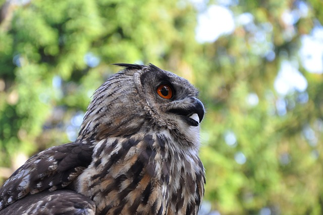
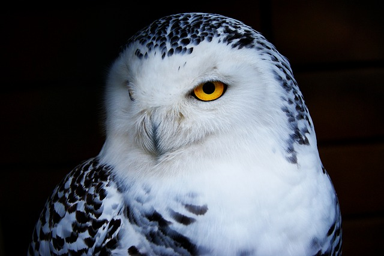
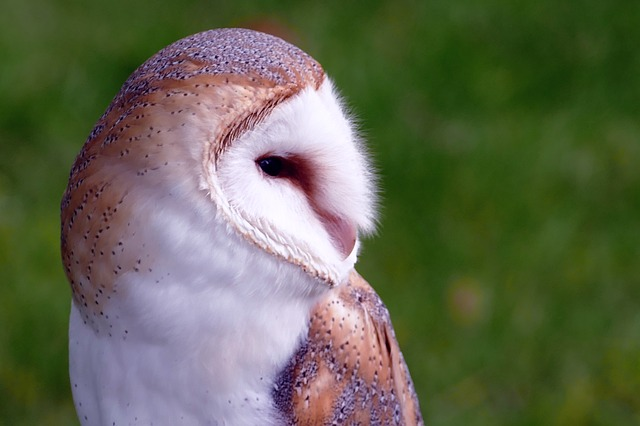
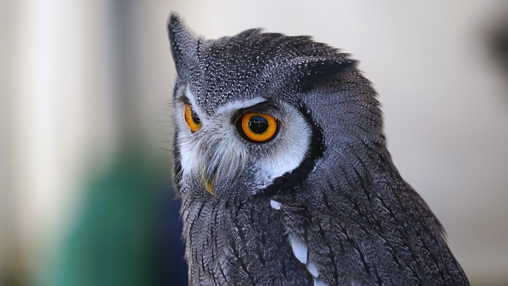
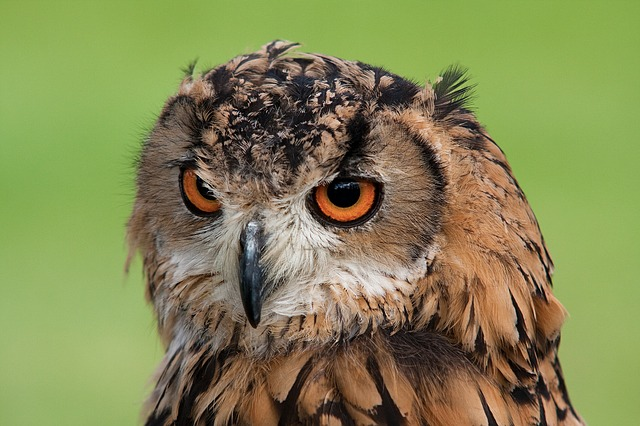

Informações interessantes sobre as Corujas
Gabriel Silva de Jesus e Leonardo Lucas

Corujas são animais muito admirados, destacasando-se entre as aves. Possuem hábito noturno e estão associadas à sabedoria

As corujas são usadas no esporte de falcoaria, comum na Europa.Elas são treinadas para caçar e retomar com a presa.

Várias espécies destas aves possuem ouvidos assimétricos, ou seja, localizados em alturas diferentes na cabeça

As corujas estão entre as aves puramente carnívoras, sendo caçadoras noturnas

Corujas podem comer as corujas de uma espécie diferente. Quando isso ocorre, geralmente elas se alimentam de indivíduos menores